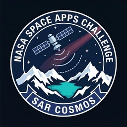

0
lakes officially classed critically dangerous

Calibrating radar
NASA Space Apps 2026, Bhaktapur. Challenge: Dancing with the SARs
A 2011 ICIMOD study counted 21 critically dangerous glacial lakes in Nepal and found proper mitigation at only two. SAR Cosmos tracks six dangerous lakes from orbit, through the monsoon, using radar. Two of them have had mitigation work, which gives us a comparison.
lakes officially classed critically dangerous
of those have had proper mitigation work
glacial lake outburst floods recorded in Nepal since 1977, 14 starting inside Nepal
households at risk downstream of Tsho Rolpa alone
Sources: ICIMOD 2011 study (cited in its 2019 Tsho Rolpa reassessment); ICIMOD and UNDP Nepal 2020 report; ICIMOD 2019 Tsho Rolpa expedition.
June to September
Optical imagery needs a clear sky. The monsoon puts the Himalaya under cloud from June to September, in the same months the glaciers melt fastest. The lakes are still filling. Nobody can see them.
The observation calendar
NISAR, a NASA and ISRO radar satellite
NISAR sends its own microwave pulses through cloud. Calm water bounces them away from the sensor, so a lake shows up as a dark, unmistakable shape on any date, in any weather.
Six lakes, areas to scale
Drag the terrain to orbit
Two sensors, one plain formula. No black box, so every number traces back to a line of code.
Landsat scenes back to 2000. Water is picked out with NDWI, with the threshold chosen for each image, then counted pixel by pixel into square kilometres.
NISAR L-band backscatter. Water scatters the pulse away, so it reads dark. Only the dark patch that contains the lake counts, because radar shadow is dark too.
Our tiers, from five-year growth in area: under 10% is Low, under 25% Moderate, under 40% High, above that Critical.
Optical areas are compared with published measurements of the same lakes on the same dates. Radar is compared with optical from within 14 days.